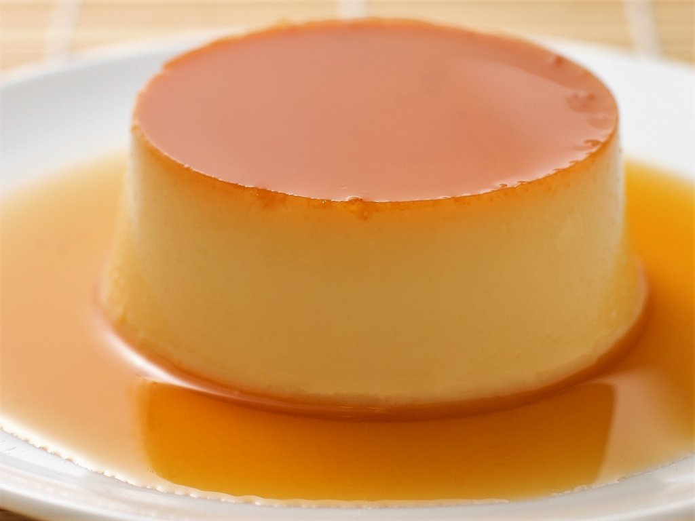

Flan casero
Por que es mi postre favorito y facil de hacer

Lista de ingredientes:
- huevo 5
- 500 ml de leche
- 200 g de azúcar (100 g para el flan y 100 g para el caramelo)
- 1 cucharada de agua caliente (para el caramelo)
pasos
- Cascar los 5 huevos en un bol. Agregar 100g de azúcar y batir suavemente hasta romper el ligue, sin incorporar aire. Añadir 500g de leche y mezclar con un tenedor o batidor de mano hasta integrar. No espumar.
- Colocar una sartén limpia a fuego medio y agregar los 100g de azúcar. Cocinar sin remover al inicio hasta que empiece a derretirse, luego revolver con cuchara de madera hasta obtener un color marrón claro
- Retirar del fuego y añadir con cuidado 1 cucharada de agua caliente, mezclando rápidamente hasta lograr una textura más fluida.
- Verter el caramelo dentro de una flanera y mover para cubrir fondo y bordes. Si se desea un flan bien liso, colar la mezcla antes de volcarla sobre el caramelo.
- Colocar la flanera dentro de una fuente más grande. Verter agua caliente hasta cubrir la mitad de la altura del molde.
- Cubrir con papel aluminio y hornear a 160 °C durante 50–60 minutos, hasta que el flan esté firme en los bordes y ligeramente tembloroso en el centro.
- Retirar del horno, dejar enfriar a temperatura ambiente y luego llevar a la heladera por al menos 3–4 horas.
- Pasar un cuchillo por los bordes y desmoldar sobre un plato hondo para aprovechar el caramelo.
- Una vez que está frío, se desmolda y se come. Así de fácil.